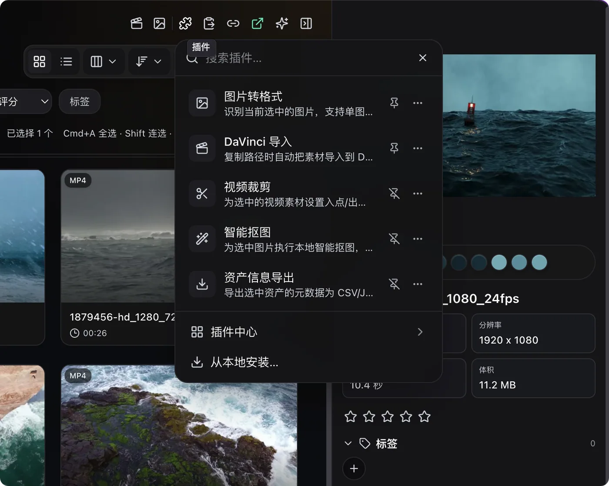
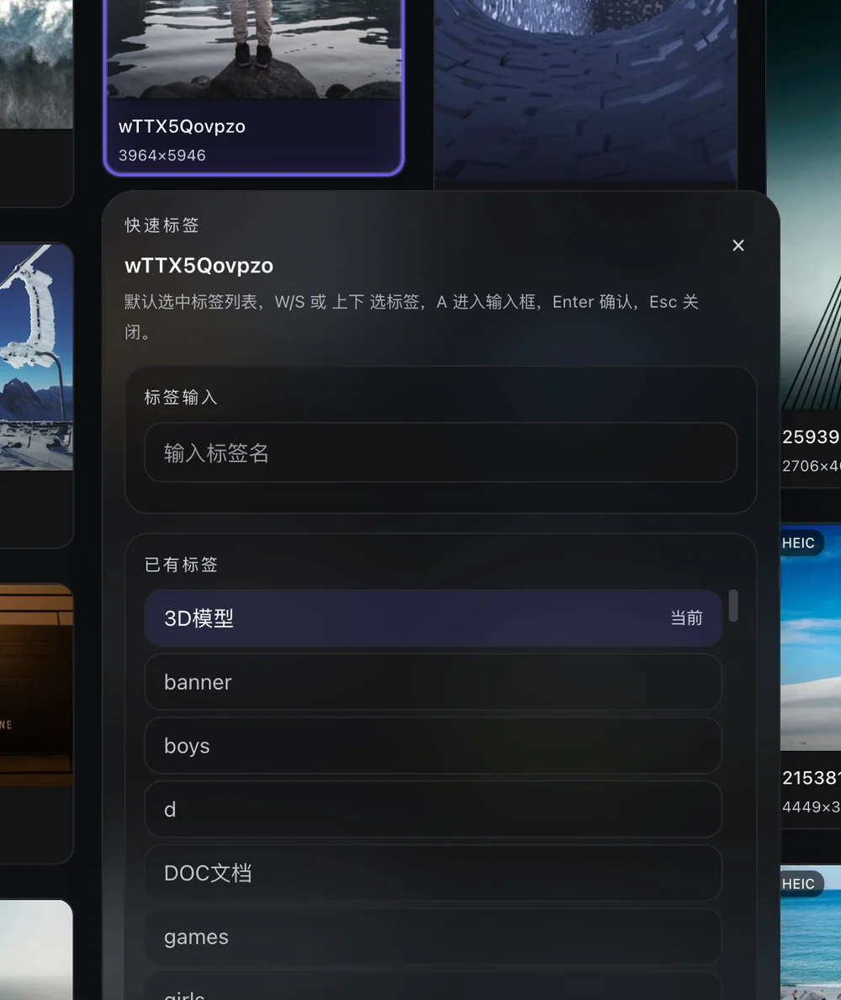
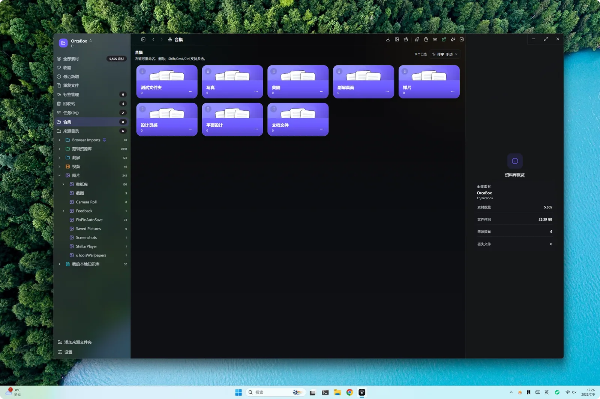
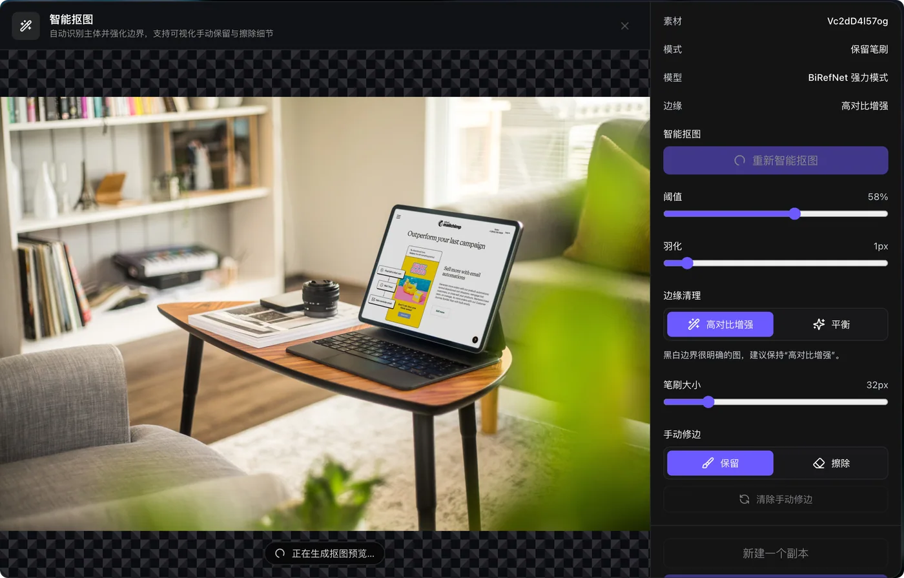
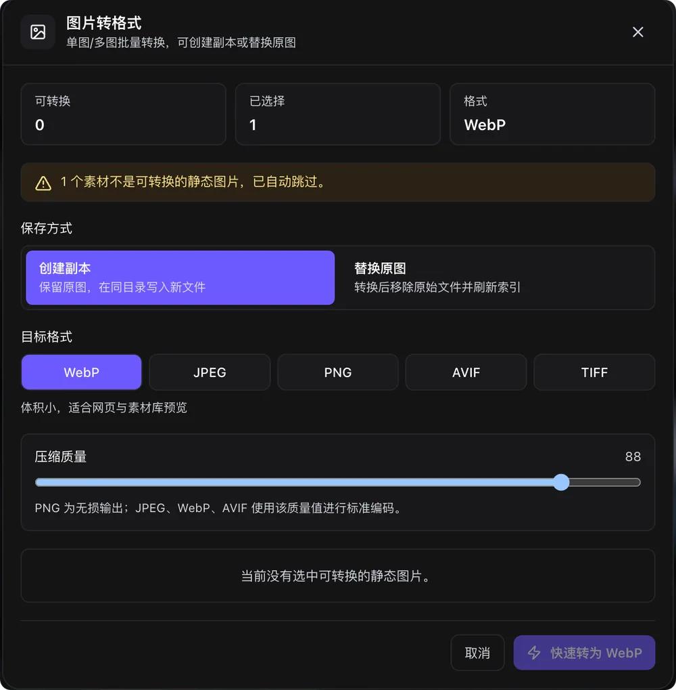
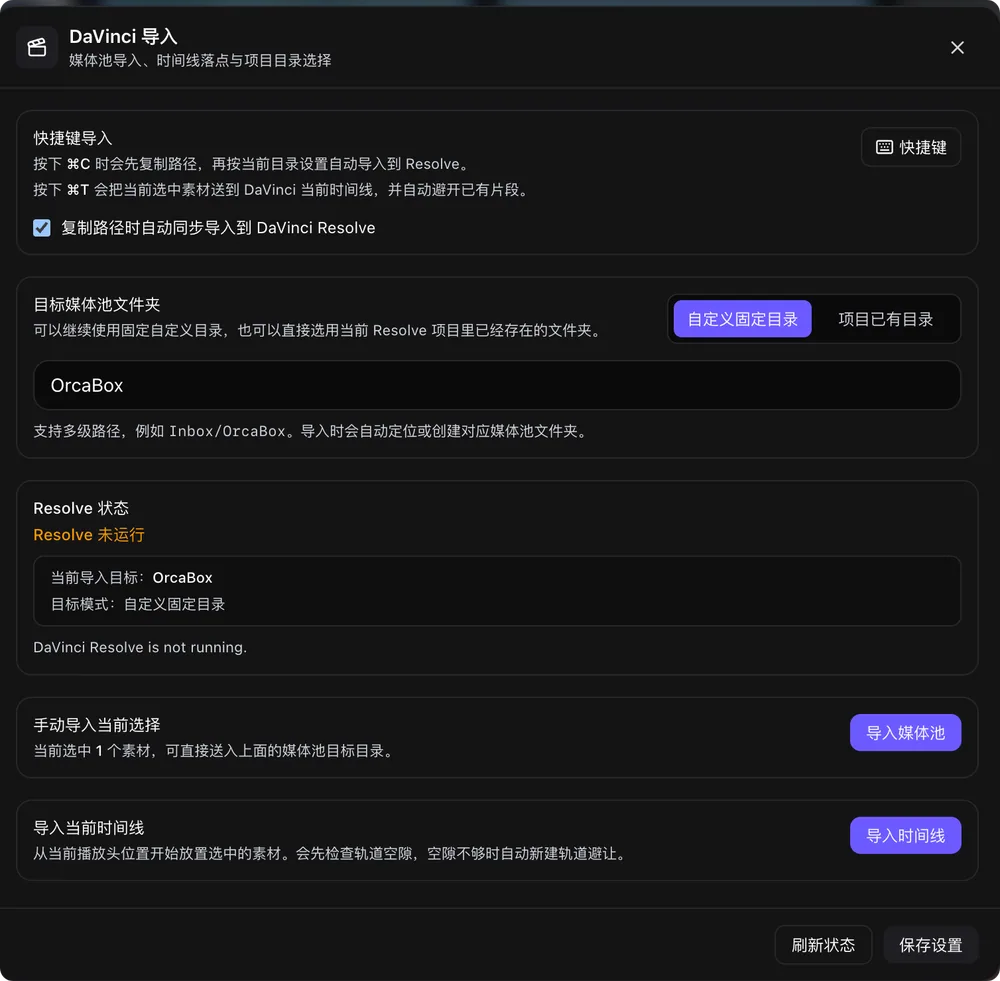
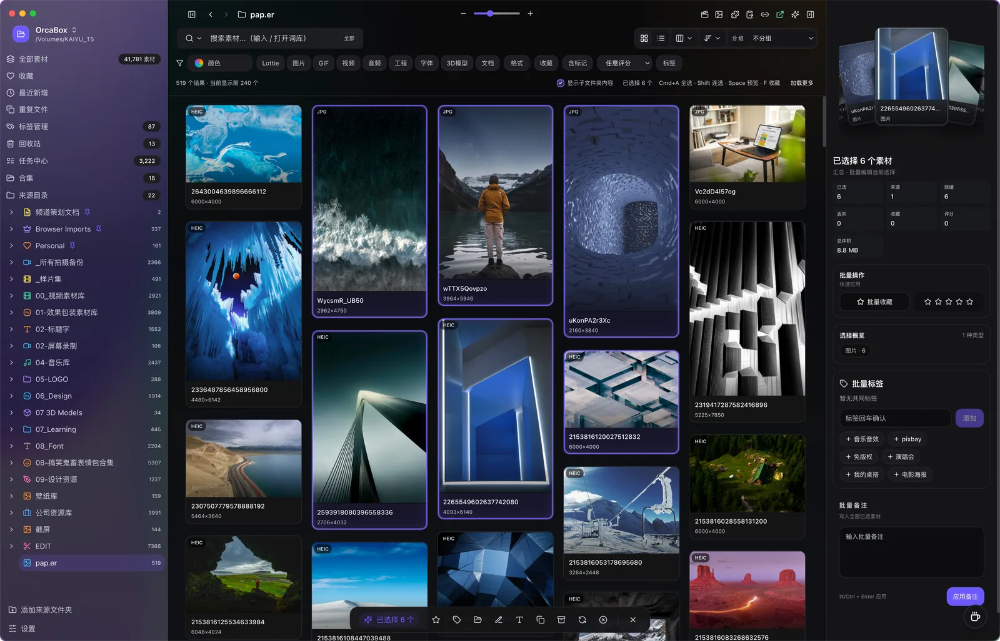

Plugin Extensions
插件扩展 工作流按需生长
本地安装 统一管理 工具直接进入素材菜单


图片、音频、动效、3D 一体预览 点击画面即可展开

PSD、HEIC、WebP、AVIF、TIFF 等专业格式原生支持 内嵌色彩分析面板 查看色板分布、直方图与 EXIF 元数据

MP3、WAV、FLAC、AAC 原生支持 自动生成音频波形图与频谱分析 支持播放预览与批量标签管理

实时网格预览不降级 播放调速循环控制 JSON 与 .lottie 双格式原生解析 预取保持挂载 拒绝重挂载占位闪烁

Three.js 驱动 支持 GLB、GLTF、OBJ、FBX、USDZ 自由旋转缩放 材质预览 纹理提取
快速标记 灵活归集 插件扩展 一套完成
本地安装 统一管理 工具直接进入素材菜单

键盘选标签 批量输入 自动去重

按项目组织素材 封面 数量 顺序一目了然

自动识别主体 支持阈值 羽化 手动修边

WebP、JPEG、PNG、AVIF、TIFF 批量处理

导入媒体池或当前时间线 减少软件间往返

批量工具栏、任务中心、本地分析协同工作 处理进度始终清晰
收藏、评分、标签、备注与批量操作统一收在底部工具栏

扫描、索引、分析、失败重试集中可见 适合大型素材库整理

本地生成候选标签 统一确认后再批量写入
提取主色板 配合颜色筛选 更快找到视觉参考
多选后同步补充备注、收藏、评分 保持整理连续
Chrome 扩展扫描当前页面的图片、视频、Lottie 与素材链接 减少网页搬运步骤
浏览器直出或系统原生播放 不生成视频代理文件
可见的 Lottie 与 JSON 素材保持实时预览 滚动和选择不会出现占位闪烁
CNB 提供主要下载 GitHub 提供备用下载
选择磁盘上的素材目录 自动扫描索引 文件不复制不移动
生成缩略图 提取元数据 分析色彩 实时监听变化 自动同步
40+ 格式即时预览 标签、合集、评分 建立素材知识库
直拖到设计工具或浏览器 支持批量、壁纸设置、字体安装